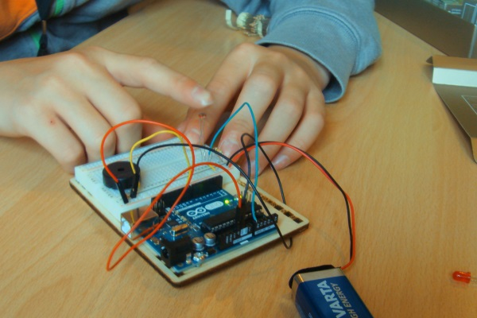

KoodiOulu tekee yhteistyötä Oulun alueen peruskoulujen kanssa. Päämuoto ovat koodikerhot joita järjestetään yhdessä koulujen kanssa. Tavoitteena on aloittaa kerho heti koulupäivän perään koulun omissa tiloissa. Kerhossa opetellaan koneen käyttöä ja ohjelmointia tekemällä harjoituksia pääsääntöisesti nettiselaimessa.
Kouluilta tarvitaan koneet ja luokka kerhoryhmää varten sekä internetyhteys. Kaikki tarvittavat harjoitukset voidaan tehdä netissä ilmaisilla tunnuksilla. Vaativampia ja pidempikestoisia kerhoryhmiä varten voidaan netistä ladata myös ohjelmistoja kerhoa varten.
Pedagogiset tavoitteet kerhossa on ymmärtää mitä ohjelmointi tarkoittaa. Oppilas hallitsee kerhon lopuksi ohjelmoinnin perusrakenteet; peräkkäisyys, toisto- ja ehtolauseet ja, mikä tärkeintä, osaa ajatella loogisesti ohjeiden antamisen koneen kannalta. Koodikerho tähtää aina sen oman pelin tekemiseen kerhon lopuksi.
Tyypillinen koodikerho kestää noin 10h jonka aikana käydään läpi kolme-neljä nettisivustoa.
Koodikerhossa opetellaan koneen käyttöä ja ohjelmointia tekemällä harjoituksia pääsääntöisesti nettiselaimessa. Kerho lähtee liikkeelle yksinkertaisilla tehtävillä jossa opetellaan antamaan komentoja. Tyypillisessä tehtävässä ohjataan pelihahmoa määrättyä polkua pitkin tehtävässä annetulla tavalla, esimerkiksi kääntymällä vain tiettyyn suuntaan tai tekemällä tietyn muotoisia kuvioita. Hyvä työkalu tähän on code.org.
Jatkotehtävät voivat olla joko logiikkaa tai koodin syntaksin ymmärtämistä kehittäviä tehtäviä riippuen ryhmän aikaisemmasta osaamisesta ja kiinnostuksesta. Esimerkkinä työkalusta on codecombat.com. Katso myös esittely tästä sivustosta koodikerho.fi:n blogissa.
Loppuaika (ja mahdolliset jatkokurssit) käytetään oman pelin tekemiseen joka kuitenkin jokaisella kerholaisella on aina toiveena. Paras työkalu tässä on www.touchdevelop.com.

Elektroniikkakerhossa kasataan oma Arduino minitietokone. Arduino aloituspaketin avulla on mahdollista tehdä täydellisiä ja oikeaoppisia elektroniikkakytkentöjä. Paketin mukana tulevassa ohjekirjassa on ohjeet hyvin monenlaisten komponenttien käyttöön. Arduino projekteja on mahdollista myös laajentaa lataamalla valmiita ohjelmanpätkiä tai muuttamalla niitä itse halutun toiminnon tekemiseksi.
Arduino toimii loistavasti myös ohjelmoinnin opettelussa.
Robottikerhon sisältönä on Lego Mindstorm robotin kasaaminen ja ohjelmointi. Legolla on hyviä ohjeita joiden mukaan robotti on helppo koota. Ohjelmointi perustuu erilaisten toimintosymbolien järjestelyyn ja vaatii hiukan opettelua. Lego roboteilla on kuitenkin mahdollista tehdä hyvin monimuotoisia toimintoja. Suomessa järjestetaan jopa vuosittainen robottikilpailu, Innokas RoboCup Junior jota voi käyttää motivoijana.
Autamme mielellään kouluja käynnistämään myös omaa koodauksen opetusta. Kerhoilun puitteissa kerättyä kokemusta menetelmistä ja työkaluista voidaan jakaa esimerkiksi VESO-päivillä tai koulujen omissa seminaaritilaisuuksissa. Jos teidän koululla on myös tällainen tarve ottakaa yhteyttä niin räätälöidään oikea koulutuspaketti.